Путеводитель
Путеводитель


Где поесть
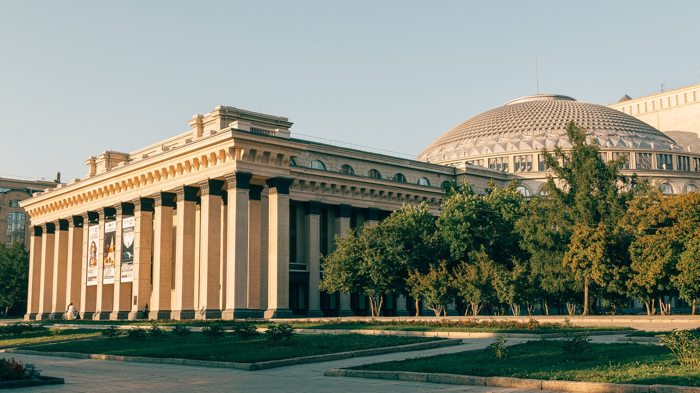
Где вкусно поесть в Новосибирске
Новосибирск — это настоящий гастрономический мегаполис. Здесь можно отведать как привычные русские блюда в авторской интерпретации шеф-поваров, так и оригинальную кухню других народов. Выбрать, куда сходить поесть, поможет наш путеводитель по кафе, барам и ресторанам Новосибирска и Новосибирской области.
Как пользоваться путеводителем
Для начала выберите предпочитаемую кухню. В городе есть рестораны немецкой, паназиатской, европейской, бурятской, английской, итальянской, средиземноморской и, конечно, русской кухни. Для тех, кто ищет уникальную гастрономию и оригинальную подачу, открыты рестораны авторской кухни.
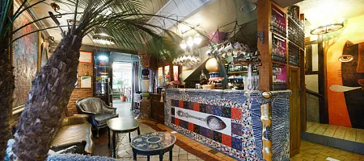
PuppenHaus
PuppenHaus (Пупенхаус) — арт-объект, идея которого навеяна творчеством австрийского архитектора и живописца Хундертвассера и знаменитого Антонио Гауди.
Новосибирск, ул. Чаплыгина, 65/1
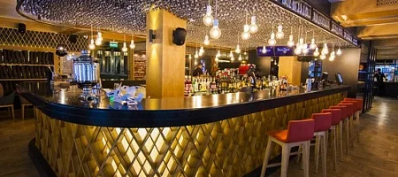
#СИБИРЬСИБИРЬ
Ресторан современной и традиционной кухни Сибири расположен на территории отеля «Азимут Сибирь». Заведение разделено на несколько тематических зон.
Новосибирск, ул. Ленина, 21
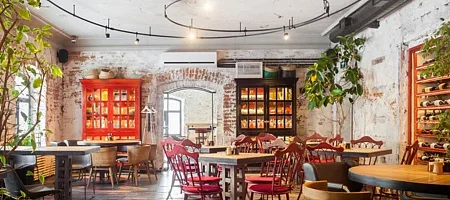
Жан Хуан Лу
Жан Хуан Лу — панконтинентальный изакая-бар.
Новосибирск, ул. Ленина, 11
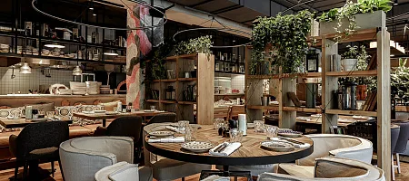
Сыроварня
Деревенский ресторан в итальянском стиле со своей собственной сыроварней.
Новосибирск, ул. Ленина, 25
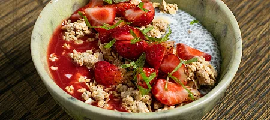
Коробок
Гастро-бар «Коробок» – уютный авторский ресторан в тихом центре Новосибирска.
Новосибирск, ул. Чаплыгина, 28
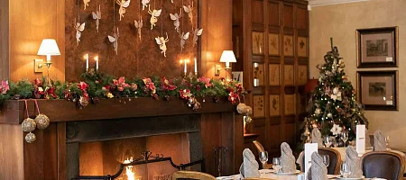
La Maison
В ресторане гостей ожидают по особым поводам. La Maison — это интерьер в стиле модерн, церемониалы, серебряные приборы, безупречный этикет.
Новосибирск, ул. Советская, 25
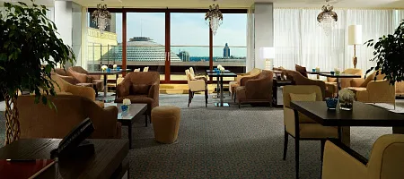
Bar & Terrace 10Ten
Бар-терраса 10Ten с великолепным видом открыта как для гостей пятизвездочного отеля «ГРАНД АВТОГРАФ ОТЕЛЬ НОВОСИБИРСК», так и для жителей города.
Новосибирск, ул. Орджоникидзе, 31
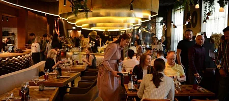
Горячий цех
Ресторан «Горячий цех» известен своим уникальным грилем, реализовать чертежи которого сможет далеко не каждый мастер.
Новосибирск, ул. Ленина, 6
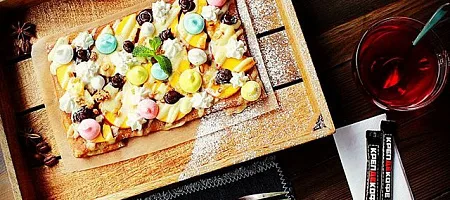
Креп
Кулинарное ателье, которое открылось на месте бывшего швейного цеха. Столы в виде катушек ниток, джинсовые кресла и швейные машинки на стене.
Новосибирск, Красный проспект, 50
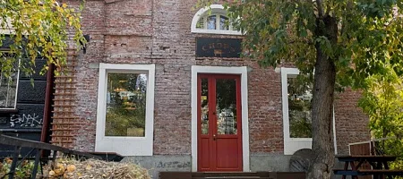
The Chops
Уютный и одновременно брутальный бар в старинном здании с вкусным мясом и крафтовыми напитками.
Новосибирск, ул. Урицкого, 17
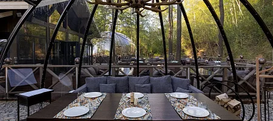
Капсульный всесезонный ресторан «Лето»
Капсульный всесезонный ресторан «Лето» — это островок природы всего в 15 минутах от сердца Новосибирска.
Новосибирск, ул. Победы, 55/1, к1
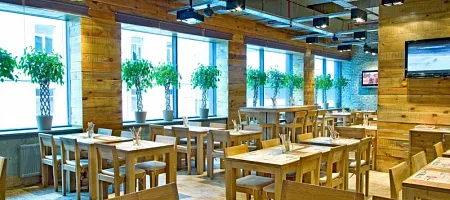
BEERMAN & Пельмени
Какие Вы любите пельмени: грузинские, китайские, уральские, с мясом, с кальмарами, с креветками, а может с чернилами каракатицы?
Новосибирск, ул. Каменская, 7
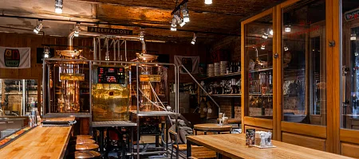
BeerFactory
В ресторане-пивоварне варят пять сортов традиционного пенного напитка европейского качества используя, всего 4 ингредиента: вода, дрожжи, солод и хмель.
Новосибирск, Красный проспект, 22
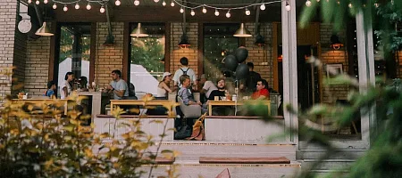
Sparks home kitchen
Домашняя кухня в тихом дворике центра Академгородка.
Новосибирск, ул. Ильича, 8
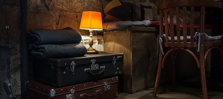
Ruby Aperitifs and Wines
Современный винно-аперитивный бар в центре городской жизни.
Новосибирск, ул. Ленина, 9, цокольный этаж
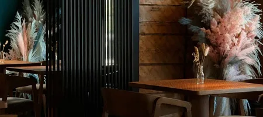
Poke Top
Заведение со стильным интерьером и паназиатской кухней.
Новосибирск, ул. Максима Горького, 81
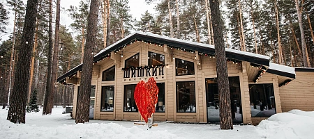
Шишкин
Аристократичная простота в интерьере, хорошая музыка и неповторимые блюда.
Новосибирская область, Новосибирский район, микрорайон Дом отдыха Мочище, 4 к1
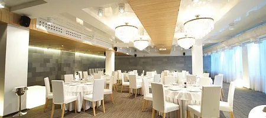
BEERMAN на Речке
BEERMAN на Речке — самый молодой ресторан сети, неповторимый по своей задумке. Он расположен на Михайловской набережной.
Новосибирск, ул. Добролюбова, 2а
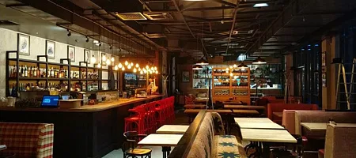
GUSI в городе
Сердце ресторана — открытая кухня, именно она задает ритм и настроение заведения.
Новосибирск, площадь Карла Маркса, 1/1
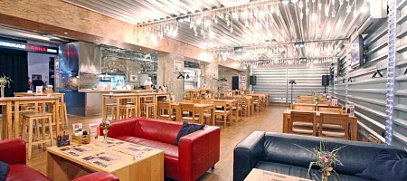
BEERMAN & Grill
Круглосуточный ресторан BEERMAN&Grill — самое первое заведение сети. Появившись 11 лет назад, именно он обозначил стиль и общую концепцию всех существующих заведений.
Новосибирск, Вокзальная магистраль, 1
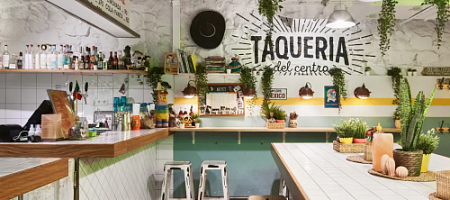
Taqueria Del Centro
Аутентичная и вечно веселая кантина, которая привезла Мексику в Сибирь в 2018 году
г. Новосибирск, ул.Ленина, 9
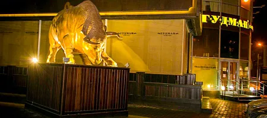
GOODMAN
Ресторан «Гудман» — место, где можно не только получить удовольствие от мясного стейка, но и приобщиться к культуре стейка!
Новосибирск, ул. Советская, 5
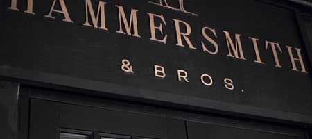
Hammersmith&Bros.
Английский паб в самом сердце Новосибирска
г. Новосибирск, ул. Красный проспект, 37
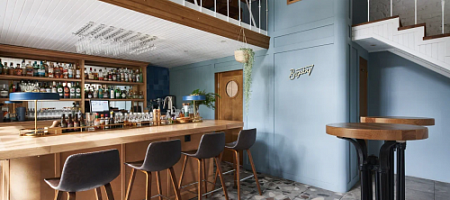
Bigsby
креативно-миксологическая студия
г. Новосибирск, Академгородок, ул. Ильича, 10
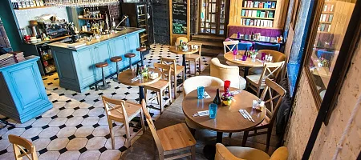
Библиотека
Уютный ресторан в центре города. 2 000 книг, которые можно рассматривать и читать прямо во время обеда.
Новосибирск, ул. Советская, 20
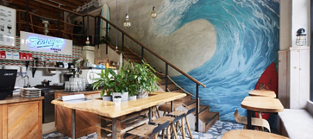
Teahupoo coffee
Cёрферская кофейня в Академгородке неподалеку от берега Обского моря
г. Новосибирск, Академгородок, ул. Ильича, 10
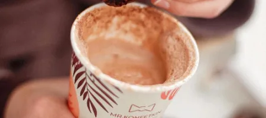
Кофейня-кондитерская «Mr.Konfetkin»
Шоколадная мастерская
Новосибирск, ул. Тимирязева, 97 и ул. Красный проспект, 234/1
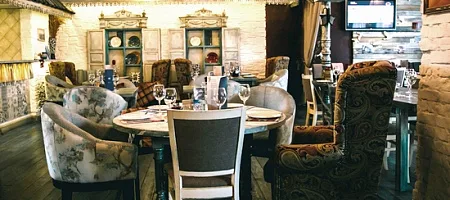
Соседи
Краеведческий ресторан. «Соседи» знакомят жителей и гостей города с кухней наиболее ярких и самобытных соседних регионов — Сибири, Бурятии и Дальнего Востока.
Новосибирск, Красный проспект, 22
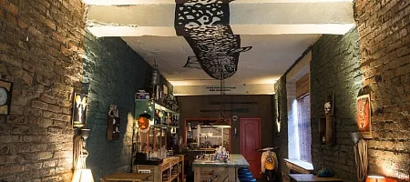
Nobody Knows I Suppose
Секретный бар, вдохновленный закоулками портового Лиссабона.
Новосибирск, Красный проспект, 22
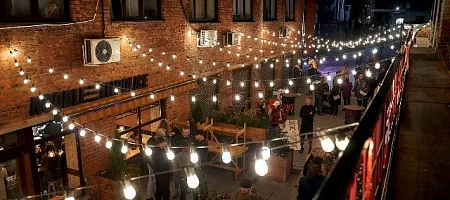
The Rooks
Уникальный формат симбиоза арт-комплекса и бара.
Новосибирск, ул. Коммунистическая, 45
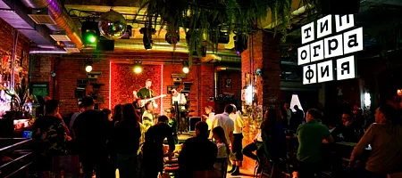
Типография
Первый руинпаб в Новосибирске.
Новосибирск, Красный проспект, 22
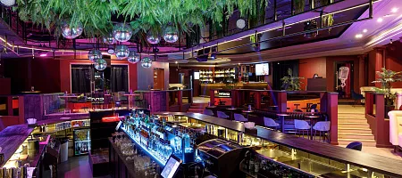
Сплетни бар by Anna Asti
«Сплетни бар by Anna Asti» — место для встреч по поводу и без: встретиться с друзьями, провести девичник, романтический ужин или день рождения.
Новосибирск, Красный проспект, 50, 2 этаж
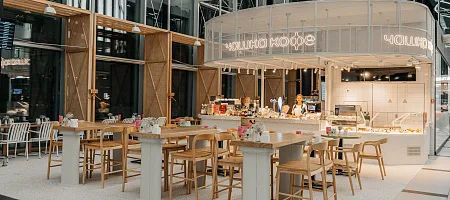
Чашка кофе
Сеть кофеен, расположенных в знаковых местах Новосибирска.
Новосибирск
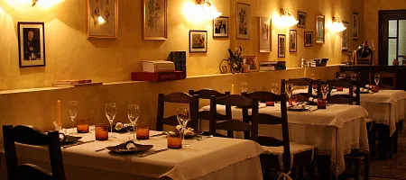
Scopin
Единственное заведение в Новосибирске с собственным идеально оборудованным винным погребом.
Новосибирск, ул. Колыванская, 8
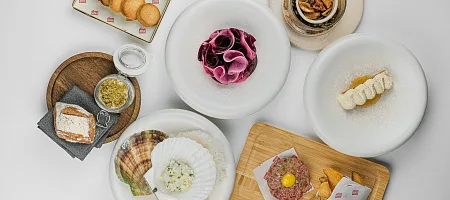
Pardon my french
Авторский ресторан с французским шефом Франсуа Фурнье.
Новосибирск, ул. Коммунистическая, 34
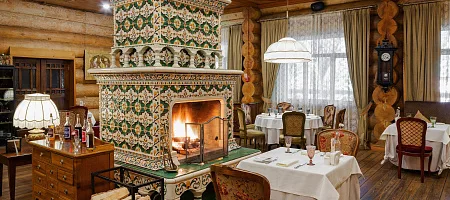
На Даче
Ресторан «На Даче» — гастрономическое путешествие в эпоху дворянской России XIX века.
Новосибирск, ул. Дачное шоссе, 5
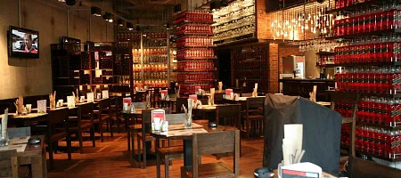
BEERMAN & Пицца
BEERMAN и ПИЦЦА — семейный ресторан сети. Здесь, как в настоящей неаполитанской пиццерии хочется собраться за столом всей большой семьей.
Новосибирск, площадь Карла Маркса, 7
Хюгге. Вино+Сыр
Панорамные окна, приглушенная музыка, мягкая мебель, пледы и свечи, и конечно же, разнообразная винная карта в сочетании с оригинальными сырными блюдами ждут Вас в Хюгге.
Новосибирск, ул. Советская 75
Ресторан ЛДС Сибирь-Арена
Смотрите матчи своей любимой команды прямо из ресторана в ледовой арене!
ул. Немировича-Данченко, 160
BEERBISTRO
Элегантный гастрономический бар в историческом здании самом центре Новосибирска.
Новосибирск, Красный проспект, 22
Скоморохи
Гостей ресторана ждет обслуживание на высоком уровне и отменные блюда, приготовленные настоящими профессионалами.
Новосибирск, ул. Челюскинцев, 21
Гастрокорт
Более 100 различных кулинарных концепций под одной крышей.
Новосибирск, ул. Мичурина, 12
Баранжар
Чайхана «Баранжар» — лучшее место для отдыха в кругу близких. Входит в ТОП-3 лучших ресторанов Новосибирска в 2021 году по версии TripAdvisor.
Новосибирск, ул. Советская, 18
Увертюра
Кафе-бар с видом на Театр оперы и балета в пятизвездочном отеле Grand Autograph приглашает всех жителей и гостей Новосибирска оценить настоящее кулинарное искусство.
Новосибирск, ул. Орджоникидзе, 31
Trattoria La Trenta
Семейный ресторан Trattoria La Trenta — это ламповая атмосфера и аутентичная кухня Италии.
Новосибирск, ул. Урицкого, 24
TWENTY TWO
Ресторан гастрономических путешествий.
Новосибирск, Красный проспект, 22
Sky lounge
Единственный ресторан с высоким видом на город. Прекрасное место для романтических свиданий и торжественных мероприятий.
Новосибирск, проспект Димитрова, 4/1
Пицца Приморье
«Пицца Приморье» — это семейная атмосфера и традиционная итальянская кухня.
Новосибирская область, Новосибирский район, п. Голубой залив, с/п Приморье территория, 2
Memories
Ресторан отеля «Аванта» — это вкуснейшие блюда европейской кухни и безупречный сервис.
Новосибирск, ул. Гоголя, 189/1
Capsula
Capsula — купольный ресторан на крыше 5-звездочного отеля «ГРАНД АВТОГРАФ ОТЕЛЬ НОВОСИБИРСК».
Новосибирск, ул. Орджоникидзе, 31
Morricone pizza & wine
Семейный ресторан итальянской кухни, где готовят римскую пиццу по уникальной технологии, точь-в-точь как в столице Италии.
Новосибирск, ул. Ленина, 6 (1, 2 этаж)
Сибиряки
Теплый огонек камина, ламповое звучание виниловых пластинок, старые добрые книги, необычная кухня и хорошее вино.
Новосибирск, ул. Советская, 6
Aziatish
Всеазиатская кухня в центре Новосибирска. Каждое блюдо в меню — визитная карточка одной из пяти стран: Японии, Китая, Таиланда, Вьетнама и Кореи.
Новосибирск, ул. Ленина, 21
IL Патио
Каждый ресторан «IL Патио» — это кусочек солнечной Италии.
Новосибирск, ул. Ватутина, 107
Перчини
Итальянский ресторан «Перчини» — любимое место встреч.
Новосибирск, Красный проспект, 25/1
Премьера
Кино-кафе «Премьера» — это изысканный выбор блюд европейской и традиционной русской кухни, элегантный интерьер и оригинальная «звездная» атмосфера.
Новосибирск, ул. Ленина, 7
Утровечера
Кофейня «Утровечера» — это два уютных зала, расположенных на двух этажах знаменитого кинотеатра «Победа».
Новосибирск, ул. Ленина, 7
GUSI в Академе
Ресторан «ГУСИ» находится на первом этаже башен Технопарка. Современный интерьер, удачное зонирование, комфортная музыка и своя парковка.
Новосибирск, ул. Николаева,12/2
ТБК Лонж
«ТБК Лонж» — авторский проект известного новосибирского ресторатора Дениса Иванова.
Новосибирск, ул. Золотодолинская, 11
Руки ВВерх!
В баре Сергея Жукова воссоздана атмосфера счастливых 90-х и 00-х, чтобы каждый смог окунуться в воспоминания своей молодости и подпевать любимым хитам.
Красный проспект, 37
Ресторанный дворик
Уютный и атмосферный дворик, объединивший множество вкусовых предпочтений в одном месте.
Двор гостиницы Центральная
Твиши
Грузинское бистро.
Новосибирск, ул. Ленина, 12
Анна Павлова
Домашняя кондитерская в центре города.
Новосибирск, проспект Димитрова, 7
Memories. Pizza & Bar
Крафт, пицца, комфорт-фуд.
Новосибирск, ул. Ленина, 20
Lucky pizza
Загородный ресторан с панорамным видом на берегу озера.
Новосибирская область, Новосибирский район, ул. Южная, 1
Shredder Pizza
Непередаваемая атмосфера 90-х и безумные пиццы с бургерами, хот-догами и маршмэллоу.
Новосибирск, ул. Коммунистическая, 45
У Беллуччи круче
Стильное место с римской пиццей и вкусными десертами.
Новосибирск, ул. Ленина, 3, 1 этаж
Пельмениssimo
Уютное кафе для всей семьи в самом центре Академгородка.
Новосибирск, Морской проспект, 54 (2 этаж)
Чучвара
Ресторан с гостеприимной атмосферой и по-восточному сочными и яркими блюдами.
Новосибирск, Вокзальная магистраль, 16
Кардамон
Два небольших зала кофейни оформлены в ближневосточном стиле. Еда преимущественно вегетарианская.
Новосибирск, ул. Чаплыгина, 39
Кустари
Ресторан «Кустари» — уютное заведение в историческом центре поселка Сузун.
Новосибирская область, Сузунский район, р. п. Сузун, ул. Ленина, 23
Папа Карло
В траттории можно наблюдать за работой пиццайоло, который готовит заказанную гостями пиццу.
Новосибирск, ул. Лазурная, 4/3
RomaAntica
Атмосфера Италии и вкуснейшая пицца.
Новосибирск, ул. Серебренниковская, 9
Shurubor coffeeshop
Стильная кофейня, где вдобавок ко всему есть еще и широкий выбор авторского чая.
Новосибирск, ул. Ленина, 3
Red rabbit
Стильный гастробар в Академгородке.
Новосибирск, ул. Ильича, 8
Clever Irish Pub
Уголок настоящей Ирландии в тихом центре Новосибирска.
Новосибирск, ул. Советская, 5
Мама Дома
Ламповые завтраки весь день в тихом центре Новосибирска.
Новосибирск, ул. Урицкого, 6